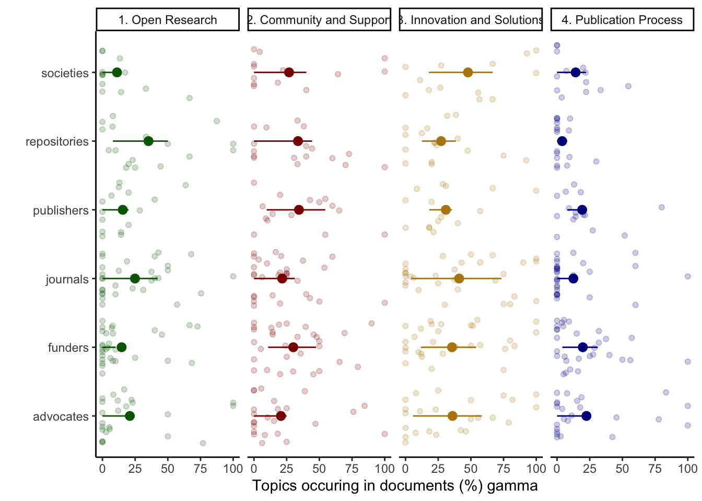

Last updated: 2023-12-20
Checks: 7 0
Knit directory:
workflowr-policy-landscape/
This reproducible R Markdown analysis was created with workflowr (version 1.7.1). The Checks tab describes the reproducibility checks that were applied when the results were created. The Past versions tab lists the development history.
Great! Since the R Markdown file has been committed to the Git repository, you know the exact version of the code that produced these results.
Great job! The global environment was empty. Objects defined in the global environment can affect the analysis in your R Markdown file in unknown ways. For reproduciblity it’s best to always run the code in an empty environment.
The command set.seed(20220505) was run prior to running
the code in the R Markdown file. Setting a seed ensures that any results
that rely on randomness, e.g. subsampling or permutations, are
reproducible.
Great job! Recording the operating system, R version, and package versions is critical for reproducibility.
Nice! There were no cached chunks for this analysis, so you can be confident that you successfully produced the results during this run.
Great job! Using relative paths to the files within your workflowr project makes it easier to run your code on other machines.
Great! You are using Git for version control. Tracking code development and connecting the code version to the results is critical for reproducibility.
The results in this page were generated with repository version a30bb03. See the Past versions tab to see a history of the changes made to the R Markdown and HTML files.
Note that you need to be careful to ensure that all relevant files for
the analysis have been committed to Git prior to generating the results
(you can use wflow_publish or
wflow_git_commit). workflowr only checks the R Markdown
file, but you know if there are other scripts or data files that it
depends on. Below is the status of the Git repository when the results
were generated:
Ignored files:
Ignored: .DS_Store
Ignored: .RData
Ignored: .Rhistory
Ignored: .Rproj.user/
Ignored: data/.DS_Store
Ignored: data/original_dataset_reproducibility_check/.DS_Store
Ignored: output/.DS_Store
Ignored: output/Figure_3B/.DS_Store
Ignored: output/created_datasets/.DS_Store
Untracked files:
Untracked: gutenbergr_0.2.3.tar.gz
Unstaged changes:
Modified: Policy_landscape_workflowr.R
Modified: data/original_dataset_reproducibility_check/original_cleaned_data.csv
Modified: data/original_dataset_reproducibility_check/original_dataset_words_stm_5topics.csv
Modified: output/Figure_3A/Figure_3A.png
Modified: output/created_datasets/cleaned_data.csv
Note that any generated files, e.g. HTML, png, CSS, etc., are not included in this status report because it is ok for generated content to have uncommitted changes.
These are the previous versions of the repository in which changes were
made to the R Markdown (analysis/Figure_2A.Rmd) and HTML
(docs/Figure_2A.html) files. If you’ve configured a remote
Git repository (see ?wflow_git_remote), click on the
hyperlinks in the table below to view the files as they were in that
past version.
| File | Version | Author | Date | Message |
|---|---|---|---|---|
| html | 5c836ab | zuzannazagrodzka | 2023-12-07 | Build site. |
| html | c494066 | zuzannazagrodzka | 2023-12-02 | Build site. |
| html | 8b3a598 | zuzannazagrodzka | 2023-11-10 | Build site. |
| html | 729fc52 | zuzannazagrodzka | 2023-11-10 | Build site. |
| html | 5dda19b | zuzannazagrodzka | 2023-11-09 | Build site. |
| Rmd | de1502d | zuzannazagrodzka | 2023-11-09 | wflow_publish(c("./analysis/Figure_2A.Rmd")) |
| html | 5bdfc2a | Andrew Beckerman | 2022-11-24 | Build site. |
| html | 34ddc80 | Andrew Beckerman | 2022-11-24 | Build site. |
| html | 693000e | Andrew Beckerman | 2022-11-24 | Build site. |
| html | 60a6c61 | Andrew Beckerman | 2022-11-24 | Build site. |
| html | fb90a00 | Andrew Beckerman | 2022-11-24 | Build site. |
| Rmd | e08d7ac | Andrew Beckerman | 2022-11-24 | more organising and editing of workflowR mappings |
| html | e08d7ac | Andrew Beckerman | 2022-11-24 | more organising and editing of workflowR mappings |
| html | 0a21152 | zuzannazagrodzka | 2022-09-21 | Build site. |
| html | 796aa8e | zuzannazagrodzka | 2022-09-21 | Build site. |
| Rmd | efb1202 | zuzannazagrodzka | 2022-09-21 | Publish other files |
Figure 2A shows gamma values (x-axis, means ± sd) that are the strength of association between a set of stakeholder documents (y-axis) and the corresponding topic.
High gamma values are strong associations.
We plotted the values for four main topics (side labels): Open Research (green), Community and Support (red), Innovation and Solutions (yellow) and Publication Process (blue).
The data for this are produced in 2_Topic_modeling
rm(list=ls())library(tidyverse)── Attaching core tidyverse packages ──────────────────────── tidyverse 2.0.0 ──
✔ dplyr 1.1.3 ✔ readr 2.1.4
✔ forcats 1.0.0 ✔ stringr 1.5.0
✔ ggplot2 3.4.3 ✔ tibble 3.2.1
✔ lubridate 1.9.3 ✔ tidyr 1.3.0
✔ purrr 1.0.2
── Conflicts ────────────────────────────────────────── tidyverse_conflicts() ──
✖ dplyr::filter() masks stats::filter()
✖ dplyr::lag() masks stats::lag()
ℹ Use the conflicted package (<http://conflicted.r-lib.org/>) to force all conflicts to become errorslibrary(dplyr)
library(ggplot2)The data are produced in 2_Topic_modeling
# Importing data produced in "2_Topic_modeling.Rmd"
# df_doc_level_stm_gamma <- read_csv(file = "./output/created_datasets/df_doc_level_stm_gamma.csv")
# Importing data that we originally created and used in our analysis
df_doc_level_stm_gamma <- read.csv(file = "./data/original_dataset_reproducibility_check/original_df_doc_level_stm_gamma.csv")# glimpse(df_doc_level_stm_gamma)
# head(df_doc_level_stm_gamma, 10)
df_figure1_gamma <- df_doc_level_stm_gamma %>%
select(-total_topic, -total_sent)
df_figure1_gamma$prop <- df_figure1_gamma$prop *100
df_figure1_gamma_wide <- df_figure1_gamma %>%
spread(topic, prop) %>%
rename(topic_1 = `1`, topic_2 = `2`, topic_3 = `3`, topic_4 = `4`)
# Topic/Category 1: Open Research
# Topic/Category 2: Community & Support
# Topic/Category 3: Innovation & Solution
# Topic/Category 4: Publication process (control)
df_figure1_gamma_wide2 = data.frame(
document = rep(df_figure1_gamma_wide$name,4),
stakeholder = rep(df_figure1_gamma_wide$stakeholder,4),
# type = c(rep("Topic 1",129), rep("Topic 2",129), rep("Topic 3",129), rep("Topic 4", 129)),
type = c(rep("1. Open Research",129), rep("2. Community and Support",129), rep("3. Innovation and Solutions",129), rep("4. Publication Process", 129)),
perc = c(df_figure1_gamma_wide$topic_1, df_figure1_gamma_wide$topic_2, df_figure1_gamma_wide$topic_3, df_figure1_gamma_wide$topic_4),
perc2 = c(df_figure1_gamma_wide$topic_1, df_figure1_gamma_wide$topic_2, df_figure1_gamma_wide$topic_3, df_figure1_gamma_wide$topic_4)
)
# adding quantiles values
sum_figure1_gamma_wide2 =
df_figure1_gamma_wide2 %>%
group_by(stakeholder, type) %>%
dplyr::summarize(lower = quantile(perc, probs = .25), upper = quantile(perc, probs = .75), perc_fin = mean(perc)) %>%
rename(perc = perc_fin)`summarise()` has grouped output by 'stakeholder'. You can override using the
`.groups` argument.figure_topics <- ggplot() +
geom_point(data = df_figure1_gamma_wide2, aes(x = perc, y = stakeholder, colour = type), alpha = 0.2, position = position_jitter(), show.legend = FALSE) +
geom_pointrange(data = sum_figure1_gamma_wide2, aes(x = perc, xmin = lower, xmax = upper, y = stakeholder, colour = type), show.legend = FALSE) +
facet_grid(.~type) +
labs(x = "Topics occuring in documents (%) gamma", y = "") +
scale_color_manual(values = c("dark green", "dark red", "darkgoldenrod", "dark blue")) +
theme_classic()
figure_topics
# # UNCOMMENT TO SAVE FIGURES
# figure_name <- paste0("./output/Figure_2A/Figure_2A.png")
# png(file=figure_name,
# width= 3000, height= 2000, res=400)
# figure_topics
# dev.off()sessionInfo()R version 4.3.1 (2023-06-16)
Platform: x86_64-apple-darwin20 (64-bit)
Running under: macOS Monterey 12.6
Matrix products: default
BLAS: /Library/Frameworks/R.framework/Versions/4.3-x86_64/Resources/lib/libRblas.0.dylib
LAPACK: /Library/Frameworks/R.framework/Versions/4.3-x86_64/Resources/lib/libRlapack.dylib; LAPACK version 3.11.0
locale:
[1] en_US.UTF-8/en_US.UTF-8/en_US.UTF-8/C/en_US.UTF-8/en_US.UTF-8
time zone: Europe/London
tzcode source: internal
attached base packages:
[1] stats graphics grDevices utils datasets methods base
other attached packages:
[1] lubridate_1.9.3 forcats_1.0.0 stringr_1.5.0 dplyr_1.1.3
[5] purrr_1.0.2 readr_2.1.4 tidyr_1.3.0 tibble_3.2.1
[9] ggplot2_3.4.3 tidyverse_2.0.0 workflowr_1.7.1
loaded via a namespace (and not attached):
[1] sass_0.4.7 utf8_1.2.3 generics_0.1.3 stringi_1.7.12
[5] hms_1.1.3 digest_0.6.33 magrittr_2.0.3 timechange_0.2.0
[9] evaluate_0.21 grid_4.3.1 fastmap_1.1.1 rprojroot_2.0.3
[13] jsonlite_1.8.7 processx_3.8.2 whisker_0.4.1 ps_1.7.5
[17] promises_1.2.1 httr_1.4.7 fansi_1.0.4 scales_1.2.1
[21] jquerylib_0.1.4 cli_3.6.1 rlang_1.1.1 munsell_0.5.0
[25] withr_2.5.1 cachem_1.0.8 yaml_2.3.7 tools_4.3.1
[29] tzdb_0.4.0 colorspace_2.1-0 httpuv_1.6.11 vctrs_0.6.3
[33] R6_2.5.1 lifecycle_1.0.3 git2r_0.32.0 fs_1.6.3
[37] pkgconfig_2.0.3 callr_3.7.3 pillar_1.9.0 bslib_0.5.1
[41] later_1.3.1 gtable_0.3.4 glue_1.6.2 Rcpp_1.0.11
[45] xfun_0.40 tidyselect_1.2.0 rstudioapi_0.15.0 knitr_1.44
[49] farver_2.1.1 htmltools_0.5.6 labeling_0.4.3 rmarkdown_2.25
[53] compiler_4.3.1 getPass_0.2-2
sessionInfo()R version 4.3.1 (2023-06-16)
Platform: x86_64-apple-darwin20 (64-bit)
Running under: macOS Monterey 12.6
Matrix products: default
BLAS: /Library/Frameworks/R.framework/Versions/4.3-x86_64/Resources/lib/libRblas.0.dylib
LAPACK: /Library/Frameworks/R.framework/Versions/4.3-x86_64/Resources/lib/libRlapack.dylib; LAPACK version 3.11.0
locale:
[1] en_US.UTF-8/en_US.UTF-8/en_US.UTF-8/C/en_US.UTF-8/en_US.UTF-8
time zone: Europe/London
tzcode source: internal
attached base packages:
[1] stats graphics grDevices utils datasets methods base
other attached packages:
[1] lubridate_1.9.3 forcats_1.0.0 stringr_1.5.0 dplyr_1.1.3
[5] purrr_1.0.2 readr_2.1.4 tidyr_1.3.0 tibble_3.2.1
[9] ggplot2_3.4.3 tidyverse_2.0.0 workflowr_1.7.1
loaded via a namespace (and not attached):
[1] sass_0.4.7 utf8_1.2.3 generics_0.1.3 stringi_1.7.12
[5] hms_1.1.3 digest_0.6.33 magrittr_2.0.3 timechange_0.2.0
[9] evaluate_0.21 grid_4.3.1 fastmap_1.1.1 rprojroot_2.0.3
[13] jsonlite_1.8.7 processx_3.8.2 whisker_0.4.1 ps_1.7.5
[17] promises_1.2.1 httr_1.4.7 fansi_1.0.4 scales_1.2.1
[21] jquerylib_0.1.4 cli_3.6.1 rlang_1.1.1 munsell_0.5.0
[25] withr_2.5.1 cachem_1.0.8 yaml_2.3.7 tools_4.3.1
[29] tzdb_0.4.0 colorspace_2.1-0 httpuv_1.6.11 vctrs_0.6.3
[33] R6_2.5.1 lifecycle_1.0.3 git2r_0.32.0 fs_1.6.3
[37] pkgconfig_2.0.3 callr_3.7.3 pillar_1.9.0 bslib_0.5.1
[41] later_1.3.1 gtable_0.3.4 glue_1.6.2 Rcpp_1.0.11
[45] xfun_0.40 tidyselect_1.2.0 rstudioapi_0.15.0 knitr_1.44
[49] farver_2.1.1 htmltools_0.5.6 labeling_0.4.3 rmarkdown_2.25
[53] compiler_4.3.1 getPass_0.2-2